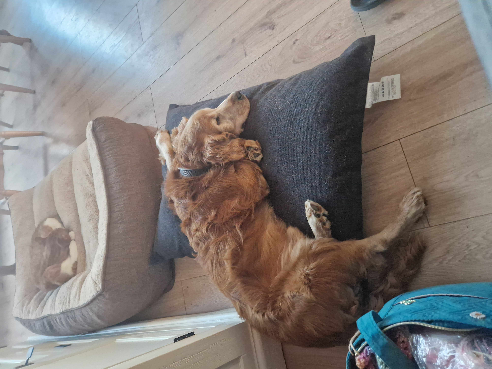
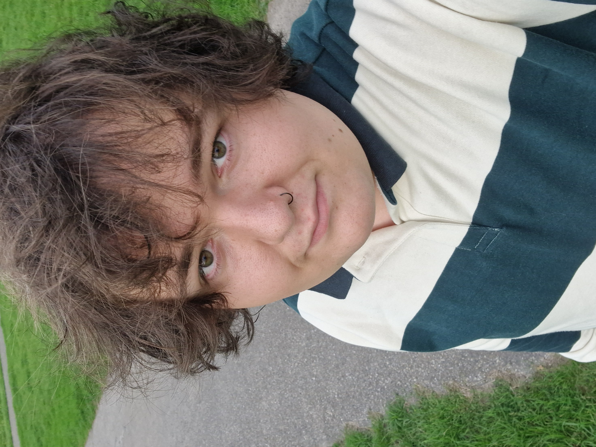

Over mij
Mijn naam is Willow Tarmond, ik ben 20 jaar oud en woon in Simonshaven.
Ik heb een hond genaamd Trubel, hij is een Engelse Springer Spaniël en is 13 jaar oud.
Ik vind het leuk om met hem te wandelen, aangezien er een mooi natuurgebied in de buurt is.
Daarnaast vind ik het leuk om te gamen op mijn computer, TV series te kijken en muziek te luisteren.